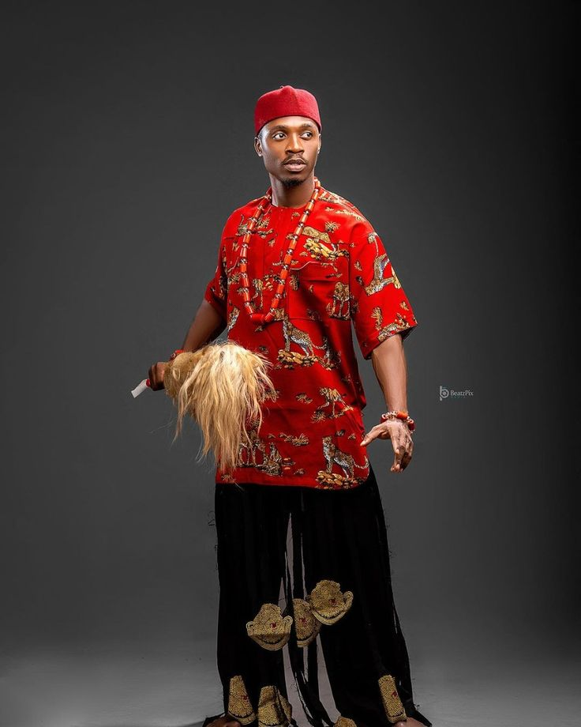
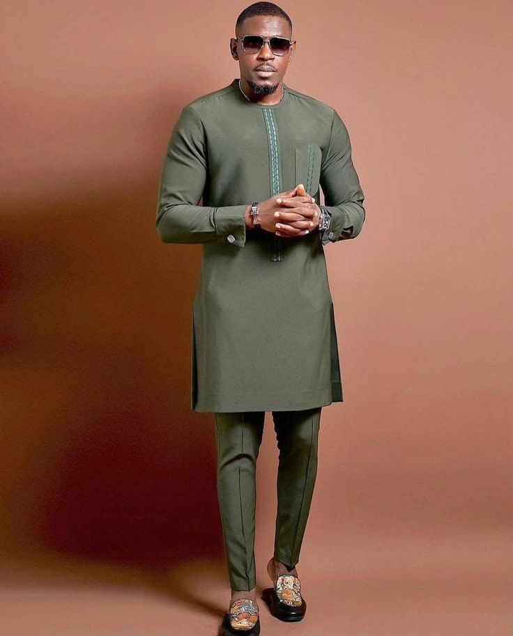

Blaze Blog
Fun facts
Fun facts
Studies show that dressing well can actually bosst your confidence and even change the way others perceive your intelligence and competence. Psychologists call this the "Enclothed cognition" effect-meanig the clothes you wear don't just influence how others see you,but also how you see yourself!

The Isi Agu top (meaning “lion’s head”) is a bold symbol of nobility, bravery, and leadership. Traditionally worn by chiefs, it's now popular among all Igbo men for weddings and special events... CONTINUE READING

Wearing a red cap (okpu ododo) isn’t just fashion — it signifies that a man has earned a chieftaincy title or has a respected status in the community. It’s worn with pride and dignity... CONTINUE READING

Wearing a red cap (okpu ododo) isn’t just fashion — it signifies that a man has earned a chieftaincy title or has a respected status in the community. It’s worn with pride and dignity... CONTINUE READING

For men, shoes are one of the first things people notice. A sharp pair of clean, quality shoes can elevate your whole look, even with a simple outfit... CONTINUE READING

A man who visits a tailor is ahead of 90% of guys. Properly fitted clothes — especially trousers and shirts — can make even affordable outfits look polished and powerful. Tailoring is your secret weapon for looking sharp... CONTINUE READING
